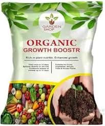
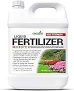

Quick match tool
Get a fertilizer recommendation based on plant, soil, and climate.
This page now behaves like a real mini tool instead of a static mockup. Pick a plant type, soil type, and climate, and the recommendation panel updates immediately.
Find your match
Pick the growing conditions you know, and GrowWell will suggest a sensible starting point.
Recommended fertilizer
Choose a plant, soil, and climate to see a tailored recommendation here.
Suggested focus
Balanced feed
Seasonal care
Tip: the recommendation is intentionally lightweight. It is a smart starting point for the
UI, not a substitute for soil testing or local agronomy advice.
Popular reference results
These cards keep the original assets but present them in a more useful comparison layout.

